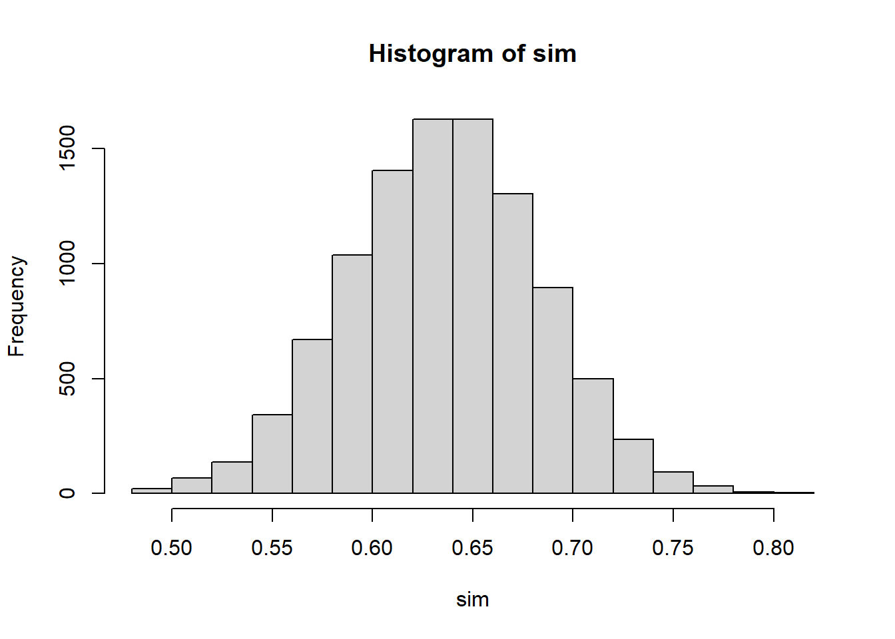

p <- 0.64
n <- 100
sim <- replicate(10000, mean(rbinom(n,1,p)))
hist(sim)
After studying this chapter, you should be able to:
When we take a random sample, the result will typically differ slightly from the true population value.
This difference is called chance error.
Chance error arises because different samples contain different individuals.
Let’s move to percentage instead of sums in the last chapter.
Assumee a health study is done on a representative cross section of 4,738 adults. The researcher can sample, say, only 100 of them. Our question is whether the sample is representative? Assume further that the population had 3,032 (64%) men. It is possible that we might pick a random sample and count 63 men in the sample. We didn’t get exactly 64% men. Are you okay with your sample? Do you think this sample can represent the population?
We might repeat this, say, 250 times; that is, we sample 250 times, with each sample consisting of 100 individuals and record the percentage of men. We’d get something like:

Note that first entry on the top left is our first sample with \(64\)% men. Over the 250 samples, we find that only 18 of the 250 samples of 100 individuals had exactly 64 men. This means that getting a sample with the same percentage as the population (64%) is pretty uncommon. Below is a histogram of the number of men from the samples of size 100 persons (i.e. the 250 repetitions):

Essentially, the mean of the 250 numbers which us shown by the above histogram is 64.26%, which is pretty close the the population percentage of 64%.
We can also calculate the spread or standard deviation of the 250 numbers, which we now call the standard error – taking a calculator, we got 4.72%.
What are the corresponding formulas for the percentage expected value and its standard error?
First, we can expect our sample percentage to be more or less equal to the percentage of the population, which is represented by the box.
\[ EV(\%) = \frac{EV_{sum}}{n} \times 100 {\%} = {\%}_\text{Box} \]
So basically we divide the expected value of the sum by sample size \(n\) then multiply by 100%.
The same procedure is applied to the standard error:
\[ SE(\%) = \frac{SE_{sum}}{n} \times 100 {\%} \] Interestingly, if a population contains proportion (p) of “successes” or 1’s, then for a sample of size \(n\):
\[ SE_{\%} = \sqrt{\frac{p(1-p)}{n}} \times 100 {\%} \]
This measures the typical size of the chance error in the sample percentage.
Returning to the above example, the following box-and-ticket model is used to represent the population:

The SD of the box is \(\sqrt{.64 \times .36}\). And with a sample of 100 random draws with replacement made, the SE of the sum of draws, i.e. \(\sqrt{n} \times\) SD, is 4.8%.
To get the SE of percentage:
\[ SE(\%) = \frac{SE_{sum}}{n} \times 100 {\%} = 4.8{\%} \]
That is, the sampling distribution of men will have an expected value of 64% and standard error of 4.8%.
But what if we increase the sample size, say, from 100 to say 400? Collecting abotehr 250 samples of size \(n=400\) and plotting gives:

Notice that the mean of this histogram, which is the sampling distribution of percentage of sample size 400, is essentially the same at around \(64\)%. This should be reasonable: we shouldn’t expect anything different – we should expect the sample percentage to be the same as the population percentage irrespective of the sample size.
As we have seen before, the percentage of a single sample need not be exactly equal to the population percentage – it may be off because of chance error, which is measured by the standard error (of the percentage). However, the standard error falls as the sample size increases. The sampling distribution becomes narrower. That is, given that the percentage in any sample is equal to the percentage in the population plus some chance error, we find that the bigger the sample, the closer the sample percentage to the population percentage. In other words, with a simple random sample, the expected value for the sample percentage equals the population percentage.
In fact, the square root law continues to work in the background – as seen by the formula, when sample size increases four-fold, the SE of percentage halves (or decreases twice.) So SE percentage is \(2.4\)% when sample size i \(400\) compared to \(4.8\)% when \(n=100\).
Note what happens as the sample size get bigger in the case of sums and percentages. With the sample size, say, 400 (from 100), the SE of sum is \(\sqrt{400} \times 0.48 = 9.6\). But, 9.6 represents 2.4% of 400; that is the SE for the percentage of men in the sample of 400 is 2.4%. Hence, multiplying the sample size by 4 reduced the SE of percentage by \(\sqrt{4}\). In general, multiplying the size of the sample by some factor, while increasing the standard error of sum, reduces the SE for a percentage, not by the whole factor but by its square root.
Keep in mind that the two SE’s for the sum and for the percentage behave quite differently
The SE for the sample sum goes up by the square root of the sample size, while the SE for the sample percentage goes down by the square root of the sample size.
So far we have not explicitly differentiated between sampling with replacement and without replacement. Obviously, when collected a sample of people, random sampling with replacement may not be appropriate. Rather random sampling without replacement is conducted, but here the actual SE will differ slightly depending on the population and the sample. When drawing without replacement, to get the exact SE you usually have to multiply by the correction factor:
\[ \sqrt{\frac{N-n}{n-1}} \notag \]
where \(N\) is the population size and \(n\) is the sample size. Note however that when the number of the tickets in the box is much larger than the number of draws, \(N>>n\) the correction factor is nearly one, and we easily ignore it in the calculations.
Often, when we toss a coin and get, for example, a series of heads, we believe that the next time the coin is tossed, we should get a tails to balance things off. But a run of heads doesn’t make tails more likely the next time. Of course, the probability of a fair coin remains the unchanged from toss to toss. It is the law of average that tricks us into this illusion. Let’s make this more explicit.
John Kerrich a South African POW during World War II tossed a coin and recorded the outcomes 10,000 times. Below is a table showing the number of tosses, the number of heads and the difference from what would have been expected in theory from an unbiased coin.1
| no. of tosses | no. of heads | difference |
|---|---|---|
| 10 | 4 | -1 |
| 50 | 25 | 0 |
| 100 | 44 | -6 |
| 500 | 255 | 5 |
| 1000 | 502 | 2 |
| 5000 | 2533 | 33 |
| 10000 | 5067 | 67 |
What we observe here is that as the number of tosses increases, the difference of the actual number of heads observed and what is expected does not decrease. In fact, with more and more tosses, the absolute value of the chance error (which we termed “differences” in the table above) increases. In fact, note that at the absolute error or difference at 10,000 tosses was about 10 times larger than at 100 tosses - this is the square root law at work.
What is important to realize is that the relative chance error, which is chance error expressed as a fraction of the number of throws, tends to decrease as the number of tosses increases. This is the law of averages at work.
\[ SE \propto \frac{1}{\sqrt{n}} \]
Suppose a population has 40% smokers. If we draw a random sample of 100 people, will the sample always contain exactly 40 smokers? Explain why or why not.
In a simple random sample of 100 graduates from a certain college, 48 were earning Baht 50,000 per month or more.
Assume 20% of the tickets are 1’s.
In a poll of 200 voters, 92 stated they would vote for the YY party.
A town has 100,000 residents aged 18 and above.
Population characteristics:
A simple random sample of 1,600 people is drawn.
To find the chance that 58% of the sample are married, a box model is needed.
Should the number of tickets in the box be 1,600 or 100,000?
Explain and estimate the probability.
To find the chance that 11% or more of the sample earn over 75,000 Baht, a box model is needed.
Should each ticket show the exact income?
Explain and estimate the probability.
Find the chance that between 19% and 21% of the sample have a university degree.
A box contains 1 red marble and 99 blue marbles.
Ten marbles are drawn with replacement.
Find the expected number of red marbles.
Find the standard error.
What is the chance of drawing fewer than 0 red marbles?
Use the normal approximation to estimate the chance.
Does the probability histogram for the number of red marbles look approximately normal?
Explain.
Suppose a population proportion is 50%.
Use R to simulate repeated samples from a population with 64% males.
p <- 0.64
n <- 100
sim <- replicate(10000, mean(rbinom(n,1,p)))
hist(sim)
The actual number of expected heads = half the number of tosses \(+/-\) chance error.↩︎